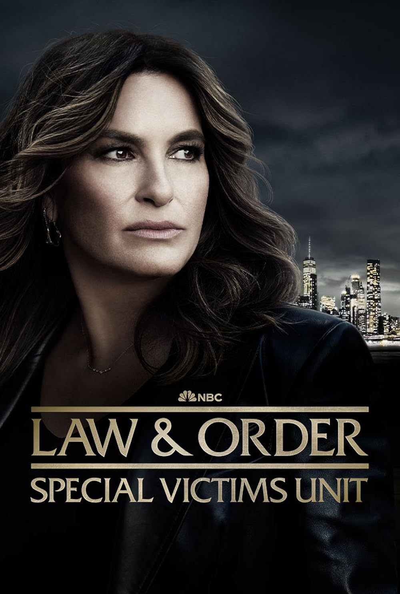

"Law & Order: SVU" estreia nova temporada nesta quarta-feira
Série policial retorna com novos casos e promete episódios ainda mais intensos.
Publicado em 2026 • Redação Geek News

A famosa série policial Law & Order: Special Victims Unit retorna com uma nova temporada que promete trazer histórias ainda mais emocionantes e impactantes para os fãs.
Considerada uma das séries mais duradouras da televisão americana, a produção continua acompanhando os casos investigados pela unidade especial da polícia de Nova York.
Nesta nova temporada, os roteiristas prometem abordar temas atuais e delicados, mantendo o tom dramático que tornou a série tão popular ao longo dos anos.
A personagem Olivia Benson, interpretada por Mariska Hargitay, continuará sendo uma das figuras centrais da trama.
Segundo os produtores, alguns episódios também trarão participações especiais de atores conhecidos da televisão.
Os fãs da série aguardam especialmente os novos conflitos pessoais que os personagens enfrentarão ao longo da temporada.
Além das investigações, a série também pretende explorar mais profundamente o impacto emocional dos casos nos detetives.
Com décadas de sucesso, Law & Order: SVU continua sendo uma das séries policiais mais influentes da história da TV.